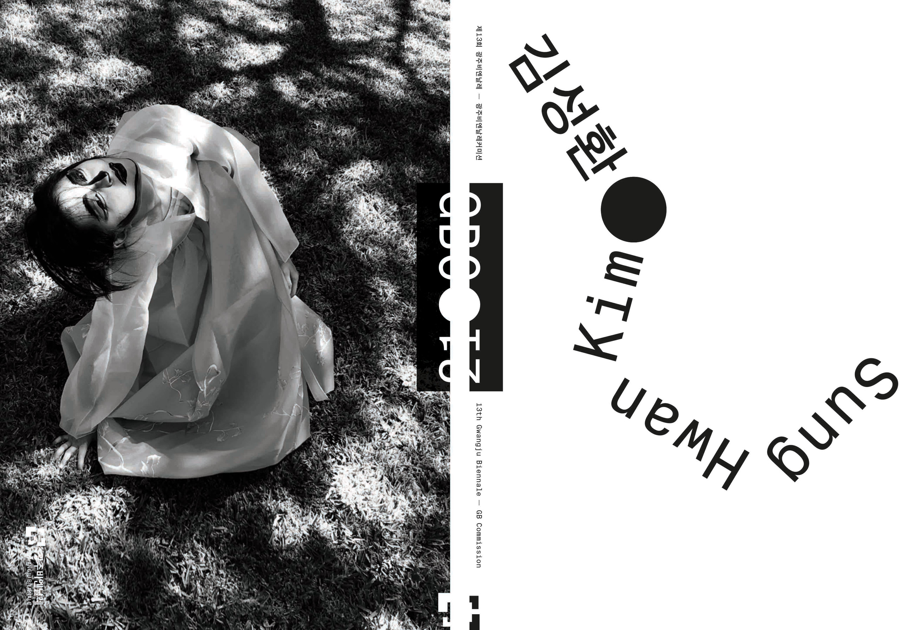

전시 보러 갈래? - 이주요와 함께 2
<
5. 역사의 밤이름을 부를 때 보이는 단서
재훈: 아까 지민이 언급했던 ‘클렁 씨’처럼, 김성환이 a랑 b를 연결하는 논리가 정반합이 아니잖아요. 비슷한 예시로 Room 1에서 커튼을 걷고 들어가면 나오는 Room 1.2에 드로잉 콜라주 작품 〈Poor Kōlea counts na pō mahina〉를 언급하고 싶어요.
사진: 재훈
이 드로잉 작품에 그려진 대상은 ‘검은가슴물떼새’라는 새Bird인데요. ‘검은가슴물떼새’를 하와이어로 ‘Kōlea’, 한국 발음으로는 ‘코레아’라고 부른데요. 한국을 뜻하는 영단어 ‘Korea’와 발음이 아주 유사하죠. 그 아래에는 작가 특유의 자막체로 다음 내용이 적혀있어요.
‘Drew Kahu‘āina Broderick wonders if Kōlea, the people, comes from Kōlea, the birds.’
‘한국인’
‘Kōlea’
‘kōlea’
‘검은가슴물떼새’
자신의 하와이 동료 Drew Kahuʻāina Broderick의 얼렁뚱땅한 질문 “한국인(Kōlea)은 검은가슴물떼새(Kōlea)에서 유래한 것인가?”를 옮긴 자막과, 흡사 한복을 입은 사람처럼 보이는 검은가슴물떼새가 그려진 콜라주 드로잉이 한 액자 안에서 짝지어진 작품인데요. 발음의 유사성만을 근거로 (아주 상관없어 보이는) 두 대상 사이의 관계를 조직하여 제시하는 이 논리가... 작가가 세상이란 지식을 이해하는 방식인 것처럼 느껴졌어요. 그를 뒷받침하는 자신감과 드로잉 실력도 주목하게 되고요.
이주요: 사실 이 작품은 일종의 농담, 말 걸기지. ‘이거 아니야?’ 하는 것에 몸을 계속 준 거야. 우리가 이런 자리에서 농담처럼 흘려보낼 수 있는 수많은 것들에 ‘몸’이 부여됐을 때, 의미심장해진다는 사실을 김성환은 잘 알거든. 그리고 그 기록이 결국에는 역사에서 하나의 페이지가 되는 것 역시 잘 알아. 역사의식이 굉장히 투철한 것 같아.
역사에 대한 명확한 개념이 있기 때문에 이 세상의 수많은 것에 언제 어떻게 몸을 줘야 되는지를 잘 알고 있는 거지. 같은 맥락에서, 아까 이야기했던 핸드폰 카메라로 툭툭 찍은 책 사진들 있지. 그 행위는 인류 문명의 전달이야. ‘지식이란 이렇게 전달되어 왔다’라는 사실, 이 책이 내 앞에 놓이기까지 수많은 행위자가 있었다는 역사적 사실이 매우 감각적이고 캐주얼한 감수성으로 전달되잖아.
이 감수성은 김성환 작가의, 역사에 대한 깊은 관심을 보여주기도 해. 역사를 끊임없이 개별화해서 자기와 연결하려는 강한 성향이라 그래야 할까? 사실 한 개인의 존재가 역사 속에서 증명되는 방식이란 얼마든지 발명될 수 있잖아. 김성환은 이 방면으로 끊임없는 시도를 하는 사람이거든.
‘역사는 ‘나’라는 개별 존재한테 개입하고 있고, 그 개별 존재 역시 역사에 개입하고 있다.’라는 명확한 인식이 이번 전시에서 그 특유의 캐주얼한 형식을 통해 드러나 보이는 거지. 과거의 수많은 사람을 통해 지금 이 책이 내 손에 온 것임을 보여주는 디스플레이, 오늘은 그런 게 되게 좋았어.
재훈: 일반적인 아카이브 전시의 톤이 무겁고 점잖기 떄문에 작가의 캐주얼한 톤이 더 유의미했던 것 같아요. Room 1에서는 그 톤이 고속도로 대형 사진에서 보이는 페이지 분할선처럼 은은하게 혹은 <몸 컴플렉스>에서처럼 입체적으로 구현됐다면, Room 2는 작가 본인이 동료들과 하와이로 Field Trip을 가서 시간을 보낸 뒤 종합한, 조사의 결과물처럼 보였는데요. 그게 캐주얼이 만개한 놀이공원처럼도 느껴졌어요.
Room 1이나 3보다 작품Piece 단위로 셈할 수 있을 만한 덩어리들이 없기도 했고요.
이주요: 첫 번째 방이?
재훈: 두 번째 방이요. 아카이브 전시가 열린 Room 1이랑 <게이조의 여름 나날>이 있는 Room 3에 비해서 그렇게 느꼈어요.
이주요: 리본 방.
재훈: 네, 리본 방에는 작품이라고 할 만한 게
이주요: 엄청 있던데? (웃음)
재훈: 뜯어보면 있지만, 그 공간이 작품들 하나하나를 개별적으로 바라보도록 설계되어 있지 않다는 말이었어요. 그러니까 공간 자체가 하나의 설치 작품이라는 인상이 더 컸어요.
이주요: 아니야, 나는 하나하나가 다 떨어져서 보이던데?
재훈: Room 2에는 총 5기의 모니터가 있었잖아요. 모니터에는 각기 다른 영상이 반복 재생되고 있었고요. 스피커는 그 개수가 5기보다 더 많았고 Room 2의 출구 쪽에 집중적으로 배치되어 있었죠. 다섯 편의 영상은 계속해서 동시에 재생되고 있었지만 스피커에서 들려오는 소리는 단채널이었어요. 스피커에서 들려오는 소리를 자세히 들어보면, 어느 때는 그 오디오의 리듬이 흑백 영상 <김천흥의 발움직임>에서 상연되는 김천흥의 춤가락에 맞기도 하고, 어느 때는 자동차 소리와 함께 David Michael DiGregorio의 음악 <he inoa pō>가 재생되며 <무제 2>에서 보이는 (차량 밖) 자연 풍경과 맞물려지기도 했는데요.
여기서 제가 말하고 싶은 건, 모니터에서 보이는 동영상과 어떤 소리가 짝을 이루는지를 작가가 지정하지 않았다는 점이에요. 기타 선율로 시작되는 <he inoa pō>는 <무제 2>와 가장 잘 어울리는 듯하지만 <무제 1>이나 <머그컵이 도넛으로, 도넛이 머그컵으로 연속해서 변형하는 모습>를 보며 들어도 안 어울리지 않았거든요. 알록달록한 Room 2의 설치 구조물을 거닐며 배경 음악으로 듣기에도 충분히 기분 좋았고요. 제가 Room 2를 하나의 설치 작품으로 여기기 시작한 때는 이러한 자유를 체감한 순간이었어요. 작가는 분명 이렇게 열려 있는 관람 동선을 의도했을 거고요. 그렇지 않았다면 모니터 별로 헤드셋과 의자를 구비해두는 식으로 신호를 줬겠죠.
그런 의미에서 Room 2의 구성이 여러 개의 작품을 분리한 후, 혹은 아직 하나의 작품으로 수렴되지 않은 요소들을 하이쿠처럼 배치해 둔 듯하다고 말한 거였어요. 그리고 출구 왼쪽에 있던 영상 <무제 1>은 (<프레실리에 의(依)해>를 가공해 만든) <무제 2>에 비해 자막 삽입과 같은 가공 없이 그저 라이브 포토를 슬라이드 쇼로 재생하고 있었잖아요.
이주요: 가공을 한 것 같던데? 어쨌든 okay.
재훈: ‘상대적으로’ 슬라이드 쇼처럼 느껴졌어요. 작가 본인이 하와이에 Field Trip을 가 직접 채취한 샘플들을 파편적으로, 다른 말로는 raw하고 playful하게 조성해 둔 공간처럼 느껴졌다. 그 소스 중에는 스냅 사진처럼 캐주얼하게 찍은 하와이의 자연 풍경뿐만 아니라 알록달록한 한복이나 나무에 누워 있는 친구들처럼 본인이 연출해서 만든 이미지들, 자신의 친구들이랑 함께 시간을 보낸 친밀한 이미지들도 있었고요. 요컨대 Room 2의 풍경을 이루는 이미지 소스의 결이 Room 1의 것과 확연히 달랐다. 본인이 현장에서 보낸 시간을 기록한 공간에 관객을 초대한 것에 가까워 보였다.
이주요: 조금 더 소스들을 보여준 것 같았다. 맞네, <게이조의 여름 나날> 같은 영상은 완성도가 완전히 있는 작품이니까.
하지민: 네, 저도 완결된 하나의 작업이 있다는 느낌은 덜 했거든요. 그래서 어떤 푸티지는 커다란 화면에서 재생될 수도 있고, 어느 곳에서는 Room 1에서처럼 발췌된 이야기들이 엮인 이야기 주머니가 놓여 있기도 한 것 같아요. 그 공간에서 조금 더 돌아다니며 차근차근히 보고 난 뒤 그 파편들을 제 머릿속에서 조합하는 과정을 거친 구간이 Room 2였어요. 그러다 보니 처음 봤을 때는 잘 안 보였던 요소도 오늘 가서 보니까 보이더라고요. Room 2 뒤쪽 복도에 있던 한복 저고리 고름 설치가 딱 그랬어요.
재훈: 정말 저고리를 이루고 있네.
하지민: 그거랑 작은 커튼으로 만든 디테일.
조현진: 얼굴 모양이 아래로 떨어져 있는 거 맞지?
하지민: 그것들은 오늘 처음 제대로 봤어요.
재훈: 그것들은 작품 표기도 안 되어 있더라고요.
조현진: 리플렛에 쓰여있네요, ‘작가는 이 전시장을 편집실이자 스튜디오로 제안하며, 미완결의 현재진행형인 채로 공개한다.’
이주요: 아, 그런 거구나. 그래서 내가 그 방이 좋았나? (웃음) 어쨌든 그 안에서는 ‘뭐, 할 일이 많네? 나한테 일을 좀 시키고 있구나.’ 이런 느낌이 있었어. 왜냐하면 부지런히 돌아다녀야 힌트랄 것도 얻을 수 있을 것 같았거든.
재훈: 그 방은 한눈에 봐도 알록달록하고 음악도 있었기 때문에 그냥 돌아다니는 것 자체의 즐거움이 있었어요.
이주요: 그건 맞아. 제일 아기자기했고 입구에서부터 올라갈 수 있는 경사가 있었잖아. 그 위에 올라서서 전시를 바라보면 조금 더 스페셜한 포지션에 있는 듯한 기분이 들기도 하지.
하지민: 심지어 카펫도 깔려있어.
조현진: 맞아, 단차도 여러 군데 있었고.
이주요: 그렇지. 내가 놓이는 위치가 조금 올라가고, 조금 내려가고, 내 발끝이 부드럽고, 중간 지점에서는 바닥이 꺼지면서 아이들이 뛰어다니는 장면이 보인다. 이런 시선, 단순히 동선이라고 부르기엔 좀 더 세심하게 말해야 할 지점이지. 이 공간의 설치가 관객을 훨씬 physically treat하고 있는 것이 보여. 이런 면에 있어서는 정확한 커뮤니케이션이 이루어졌던 것 같아.
조현진: 올라설 수도 있고 걸터앉을 수도 있는 단이나 좁은 통로를 굽이굽이 다니면서, 이 공간이 제게 더 개인적으로 다가오는 기분이 Room 2에서는 확실히 들었던 것 같아요.
6. 우리가 처음 보는 언어들의 놀이터
재훈: 근데 다들 그건 어떻게 봤어요? 김성환 작가가 영상을 전시할 때마다 설치물을 아주 적극적으로 활용하는데, 그중에서 아주 기다란 검정색 삼각형 같은 걸로 공간을 가르거나 연결하고는 하잖아요. 이번 전시에서는 파란색으로 변주되어 두 갈래 길을 만들기도 했고요. 이 요소가 참 특징적이고 좋은데 이걸 어떻게 말로 해야 될지 항상 모르겠었어요.


사진: 박가희
이주요: 공간 안에서 드로잉을 한 거지. 드로잉을 통해 architecture한 요소를 전시 공간 안에서 구현한 것이리라 나는 생각을 하였어.
하지민: 시립미술관은 전시실이 크게크게 방으로 나뉘어 있는 전형적인 화이트큐브 구조잖아요. 근데 공간 안에서 바닥재의 종류나 높이 차이, 색깔 구분으로 면 분할을 해 주니까 처음에 어디를 봤다면 그다음에 어디를 볼지 내 안에서 선택적으로 운영을 할 수 있었어요. 그렇지 않았다면 모든 정보가 딱 내 눈앞에 확 정리돼서 보일 텐데, 분할돼 있으니까 어디서 무엇부터 볼지를 고민할 수 있었달까요.
이주요: 관객들이 전시 공간에 들어갈 때 보통 선택하는 동선이나 움직이는 방식이 있지? 리본 방에서 김성환의 설치는 그 관성적인 움직임을 cancle 시켰어. 그저 벽만을 바라보게 하지 않고 고개를 쳐들도록 혹은 자신의 발밑을 보도록, 다양한 크기와 모양의 설치물을 통과해 작품에 이르도록 하게끔 미션을 주거든. 관객은 그 과정을 통해 이 공간 안에 조금 더 깊이 relate 되고 personal 해지지. 그 비일상적인 경험을 어떤 면에서는 ‘유예의 시간’이라고 부를 수도 있을 거야.
작가는 전시에서 관객의 동선을 리드할 수 있어. ‘내가 원하는 대로 움직여! 정확하게!’ 이런 지시를 ‘설치’를 통한 효과로 제안할 수 있는 것이거든. ‘얼마나 멀리 돌아 이 작품 앞으로 다가오게끔 할 것인가? 이 작품 앞으로 다가왔다면 그다음, 여기서 받은 감정을 품고 직진을 하게 할 것인가 오른쪽을 보게 할 것인가? 고개를 들게 할 것인가? 그렇다면 어떤 속도로 움직이게 할 것인가?’ 와 같이, 다음 움직임으로 연결시킬 수 있는 거지. Room 2는 그 유도되는 경험의 좋은 예시일 수 있겠고.
재훈: 네, 즐거웠던 건 사실이에요.
이주요: 놀아주잖아~ 리본 방은 관객과 막 놀아주던데?
조현진: 정글짐처럼.
하지민: 그렇다 보니 초벌 때 못 봤던 것들을 이번 재벌 때 새로 수확할 수 있는 것 같아요.
이주요: 세 번째로 올 때면 또 다른 걸 수확하겠지. 그리고 이 전시에서 정보가 circulate 되는 방식, 아니 ‘정보’라는 단어보다는 ‘이야기’가 적절하겠다. 맨 처음에는 정보라고 인식했지만 그 안에서 시간을 보내다 보면 어느새 이야기가 되어 있지. 그런 의미에서 Room은 정말 번역의 공간이야.
다른 관객들도 이 전시를 감상하면서 지금 하고 있는 경험이 혼란스럽기도 하고, amuse 되기도 하고, curious 하기도 할 거거든. 단번에 간파되지 않는 유예의 시간 속에서, 다른 관객은 작가의 architecture 한 디자인에 어떻게 스스로의 몸을 맡기고 있는지가 또 다른 볼거리이기도 해. 누구는 계단에 올라가 있고, 누구는 벽면에 기대고 있고, 누구는 이전에 내가 봤던 걸 지금 보고 있는 장면. 이걸 보다 보면 ‘이곳은 Platform이 맞다’라는 느낌이 들어.
재훈: 그렇네요.
이주요: 왜냐하면 내가 안필립을 보고 있을 때 다른 <몸 컴플렉스>의 인물이 저기서 날 뚫어져라 보고 있거든. 저 멀리서 “여러분~ 여러분~” 하면서 계속 말을 걸고 있는 거야.
재훈: <몸 컴플렉스>는 작가가 책과 같은 자료에서 봤던 인물들을 실제 몸 사이즈로 출력해 만든 작품이죠? 저는 보면서, 학교 선생님이 수업 시간에 교과서를 읽어줄 때 그 교과서에 있던 인물들이 책 밖으로 튀어나와 ‘나는 이런 사람이야~’ 하고 소개하는 듯했어요.
이주요: 그러니까. “저거 봐!” 이런 거지 “이거 봐! 저기 봐봐~!”
7. 감독 김성환과 과정을 함께하는 일
재훈: 리플렛에 적힌 Room 1에 관한 설명을 읽고 놀랐던 부분이 있었어요. Room 1이 (김성환이 2022년에 참여했던 전시) 하와이 트리엔날레 2022 《태평양의 세기 - 모아나누이아케아를 지키며 이어가다》의 일부를 이번 전시에 맞게 재구성한 결과물이라는 점이었는데요. 이 이야기를 하려면 (김성환이 2021년에 참여했던 또 다른 전시) 제 13회 광주 비엔날레 《떠오르는 마음, 맞이하는 영혼》 이야기를 해야 돼요.
김성환이 광주 비엔날레 커미션을 받아 제작한 영상 작업 <머리는 머리의 부분>에 관한 제반의 내용을 엮은 책 『머리는 머리의 부분』에서 김성환은 하와이 트리엔날레 2022의 큐레이터 중 한 명인 Drew Kahuʻāina Broderick을 인터뷰하는데요. 그중 아래와 같은 문답이 나와요.

ⓒ 김성환
ⓒ 김성환
김성환: 예컨대 당신은 하와이 트리엔날레에서 내 작품을 소개할 계획인데, 언젠가 나에게 한국의 특정 역사(5·18 민주화 운동)를 주제로 제작한 광주비엔날레커미션 작업(<머리는 머리의 부분>)을 하와이 트리엔날레 출품용으로 변형할 의향이 있는지 물어본 적이 있다.
드류 카후아이나 브로더릭: 그렇다.
김성환: 당신이라면 그 질문에 어떻게 대답하겠는가? 그 전시에 초청된 많은 예술가들이 모두 하와이 출신도 아니고, 하와이에 대해 잘 아는 것도 아니다. 무엇보다, 모든 작업이 하와이를 위해 제작된 것도 아니다. 그럼에도 불구하고, 여기(하와이)에서 전시되어 이해와 반향의 대상이 될 것이다. (...)
드류 카후아이나 브로더릭: 그렇다. 미와코 데즈카 협력 큐레이터와 멜리사 치우 큐레토리얼 디렉터 없이는 내가 그 질문에 완전하게 답하기는 어려울 것 같다. 우리 셋의 삼각 관계 속에서 형성될 의미가 당신의 질문에 대한 하나의 답이 될 수 있을 거라고 생각한다.
하지만, 그 삼각형의 한 꼭짓점인 내 의견을 먼저 말하자면, 나는 예를 들어 당신의 작업이 특정한 장소와 사람들 뿐만 아니라, 2022년 개최될 하와이 트리엔날레의 다른 참여 작가들과 관계를 맺게 될 때 어떤 결과가 나타날지에 관심이 있다. 단순히 당신이 이 작업을 통해 표현하고자 하는 의미에 그치지 않고, 다른 작가들의 작업이 전달하려는 의미와 만나는 그 관계 속에서 형성될 새로운 의미에 관심을 두는 것은 문제가 될 수도 있는 것도 알지만 말이다.
이해를 돕기 위해 편집자가 일부를 변형함.
재훈: 김성환이 이번 전시의 Room 1에 데려온 ‘필리아모오’나 ‘아이 포하쿠 출판사’가 바로 위 문답에서 브로데릭이 언급한 ‘하와이 트리엔날레(이하 ‘HT22’)의 다른 참여 작가들’이에요. 그러니까 HT22를 통해서 만난 다른 작가들의 작품을 자신의 개인전에 가지고 온 것인데요.
저는 이 선택을, <머리는 머리의 부분> 이후에 하와이에서 만든 자기 작품의 맥락을 설명하기 위해서는 HT22에서 (드류 브로데릭의 시선과 몸을 통해) 만난 새로운 동료들이나 그들과 나눈 대화가 사전 맥락으로 깔려 있어야 한다는 의미로 이해했어요. 어떻게 보면 이 사람들이 있어야만 그 이후의 내 작품이 성립 가능하다고 말하는 것 같기도 했고요. 그러니까 제가 강조하고 싶은 점은, 김성환 본인이 ‘목격’한 하와이(예술가)들에 대한 수용도 그리고 본인이 속해 있는 맥락에 대한 흡수력이 대단하다.
이주요: 활발하다. 매우 활발하다. 그리고 여기다가 하나만 추가를 할게.
미술 쪽에서 온 작가들을 보면 작업을 하는 방식이 기본적으로 스튜디오 베이스야. 작가 혼자 작업실에서 시간을 보내며 작업을 계속해 나가는 식이거든. 하지만 김성환은 그렇지 않아. 김성환에게는 근본적으로 ‘감독’으로서의 아이덴티티가 강력하게 있어. 작업을 비디오 쪽에서 시작했기 때문에, 작품을 구현하는 방식이나 배치뿐만 아니라 공간에 대한 시선이나 운용 방식과 같은 출발점이 - 개인 작업으로부터 시작하고 성장해 온 나 같은 작가들과는 - 굉장히 다른 거지.
예를 들어, 자신이 원하는 것이 있을 때 그것을 구현해 줄 사람과 어떻게 커뮤니케이션하느냐의 문제는 김성환에게 있어 매우 중요해. 나는 그 사람과 어떤 시간을 보내고 있으며 그 구현의 보답으로 무엇을 교환할 것인가. 이 문제의 해결이 굉장히 오래 걸릴 때도 있고 안 될 때도 있고 그렇겠지. 그 구현이 장기간의 관계 속에서 이루어지기도 하고.
재훈: 어떤 점을 보며 그렇게 생각하셨어요?
이주요: 결국 감독은 자기가 카메라 앞으로 나가는 역할이 아니라 스태프들을 움직이는 역할이잖아. ‘이 장면에서는 두 배우가 몸을 이렇게 움직여라, 조명은 위에서 오른쪽으로.’와 같은 정확한 의도로 이끄는 역할이지. 실제로 이번 전시나 작품을 구현할 때 수많은 스태프를 디렉팅했을 거야. 그 흔적이 전시에서 부분 부분마다 보이고 여기에는 같이 작업하는 사람과의 커뮤니케이션에 들이는 시간이나 intensity, 특유의 방식이 다 녹아들어 있겠지.
그런 점에서 개인 작업에서 시작한 작가들의 출발점과는 사뭇 달라 보인다. 물론 아닐 수도 있겠지. 하지만 누군가 김성환을 봤을 때 이 작가는 결이 다르고, 길이 다르고, 층위가 다르다고 느낀다면 한번 이렇게 생각해 봐도 좋겠어.
재훈: 이야기를 듣고 보니 특정 배우나 스태프들과 꾸준히 합을 맞췄던 감독들이 떠오르기도 해요. 감독 오즈 야스지로와 배우 류 치슈, 차이밍량과 이강생, 홍상수와 김민희.
하지민: 김성환의 전작들에는 본인 조카가 출연한 영상도 되게 많잖아요. 저는 그런 점만 봐도, 사실 가족이 작업에 출연한다는 게 어렵지 않은 선택일 수도 있지만 동시에 제일 어려운 선택이라고 생각하는데요. 김성환 작업을 일대기처럼 늘어놓고 보면 그 애가 자라는 과정이 제 눈에도 보일 만큼 여러 번 나오고, 그 애가 자라면서 작가 본인의 작업도 바뀌죠. 그런데 그 출연이 가능하기까지 조카와의 관계도 상당히 중요했을 것 같거든요.
이주요: 조카와의 관계가 계속 바뀌었지. 사춘기 때는 울면서 했어. 상당한 분량의 텍스트를 모두 외우고 실수 없이 빠르게 말하고 감독의 요청에 따라 될 때까지 동작을 반복해야 하니까.
하지민: 진짜 그 애가 아니면 안 되었을 만큼...
재훈: ... 촬영 끝나고 맛있는 거 사줬겠죠.
이주요: 그렇지, 엄청 예뻐했지. 너무나 신기한 존재잖아. 하나밖에 없는 누나의 딸이 자기를 닮은 동시에 전혀 다른 생명체이기도 하니까. 또 아직 교육 같은 것들이 쌓이지 않은 아이였다 보니 거기서 되게 근본적인 것을 보곤 했을 거야. 바라보는 입장에서는 굉장히 자극적이었겠지. 이걸 담지 않고서는 못 배겼을 만큼.
재훈: 듣다 보니 작가가 어느 인터뷰에서 자신에게 작품 제작이란 그 대상에 관한 배움의 한 방식이기도 하다고 말한 게 기억나네요. 그 맥락에서 자기 조카 Yoon Jin Kim을 작품에 출연시키는 일은, 지금 ‘뉴욕이란 도시에서 Asian-American으로 자란다는 것’이 어떤 의미인지를 조카와 함께 배워나가는 과정이라고 덧붙였거든요.

Link: https://youtu.be/PQNSAi-Df6M?si=Y5yP26CFCxwrOtzR
ⓒ MoMA
또 이 인터뷰에서 흥미로웠던 점은, 하와이에서 촬영한 영상을 광주의 5·18 민주화 운동의 맥락과 어떻게 연결시켰는지 묻는 질문에 대해, ‘은유’라는 기법에 대한 애정으로 대답하는 부분이었어요.
Sung Hwan Kim: I like metaphors. Metaphor means when you're talking about one thing, you travel to another place. And then you start to understand about the thing even though you are looking at something else.
재훈: 이런 식으로, 무언가에 관해 알아가기 위해 또 다른 무언가를 탐구하는 게 김성환의 특징 같아요. 같은 맥락에서 자기 조카에 관해 알아가는 일은 자기 탐구의 일환이기도 하겠죠? 기본적인 사고방식이 이렇게 자리 잡힌 것처럼도 느껴지고, 이런 방식으로 생각하기를 즐거워한다고도 느껴지더라고요.
또, 이번 전시의 Room 3에 있던, 작가 본인 아버지의 뼛가루 사진 <섬이 표현된 잿더미> 있잖아요. 섬처럼 보이는 유골 사진을 바다 위에 떠 있는 하와이의 카호올라베 섬 사진의 오른쪽에 배치해, 보는 사람을 당황하게 만드는데... 보면서 ‘첫인사를 이렇게 시켜주네,,?’라는 생각이 들었어요. 작가 본인이 세상과 맺는 거리감이나 연산 과정이 이 작품에서 특히나 느껴지면서, 선생님의 표현대로라면, 이 사람은 참 감독이다 싶었습니다.
사진: 재훈
이주요: 그런 면이나 시선, 태도나 시각에서도 감독이지만 나는 전시의 물리적인 설치만을 보고 ‘얘는 감독이다’ 라는 생각을 하였어. Material은 무엇을 썼고 어떻게 활용했는지, color는 어떻게 썼는지, 공간에 접근할 때 architecture한 consideration은 무엇이었는지 그런 것들을 계속 봤거든.
재훈: 전시를 처음 본 후에 같이 대화 나누셨다고 했잖아요. 그때 김성환 작가가 뭐라고 답변하셨나요?
이주요: 김성환은 Yes지. 본인이 주어진 조건 속에서 어떤 판단을 해야 현재의 것들이 이루어지는지 명확하게 알고 있지. 그리고 감독은, 예를 들어, 배우가 이 장면에서 눈물을 울컥하게 만들기 위해 저마다의 방법을 사용하잖아.
하지민: 가스 라이팅. (웃음)
이주요: 그런 연출에는 그 상태를 구현하기 위한 매개가 필요하거든? 그게 물질 혹은 재료이기도 하고, 공간일 때도 있고, 사람, 테크니션이기도 하고 그런 거잖아. 작품이나 설치에서 그 관계가 총체적으로 보인다는 뜻이야.
나랑 비교해 보면 명확하잖아. 내 작품들은 대다수가 손으로 만드는 행위에서 시작한 게 너무 보이니까.
사진: 재훈

사진: 하지민
8. 창작을 해야만 인간이다
이주요: 아까 조카 Yoon Jin 이야기가 문득 나와서, David Michael DiGregorio (이하 ‘David’ 혹은 ‘Dogr’) 이야기도 조금 하고 싶네.
재훈: 거의 가족이나 다름없는 존재 아닌가요? (웃음)
이주요: 정말 젊을 때부터 만났으니까. 나이가 들어가며 각자 사람으로서 겪은 변화도 ㅣ있었을 테고, 둘의 관계나 역할도 변했을 테고, 또 창작의 파트너로서의 가지는 무게감도 바뀌었겠지. 시간이 지나도 끊임없이 도래하는 주제일 거야. ... 생각해 봐. David를 그렇게 메인 포스터에 떡하니 걸어놓을 수 있는 거야?

ⓒ 서울시립미술관
하지민: 미술관으로 향하는 여러 길목에 걸린 조그만 현수막 하나하나에 다 있잖아요.
이주요: 맞아, 모든 클로즈업을 담당하고 있잖아. 그런 식으로 David가 김성환의 작품에서 꾸준하게 어떤 역할을 담당하고 있거든. 그래서 ‘김성환의 작품에서 숨은 David 찾기’ 같은 걸 해보면 엄청 재밌을걸? 각 시기나 작품마다 David에게 어떤 역할이 주어졌고 그 역할이 어떻게 수행되고 있는지를 track down 해보는 거지.
재훈: Room 3의 출구 쪽에 (정말 뜬금없게도) 막걸리 레시피 전수 영상 <액츄얼리나의 막걸리 만들기>가 있었잖아요. 그 영상을 만든 작가 이름이 ‘액츄얼리나Actualina’라고 표기되어 있거든요. 저는 처음 봤을 때는 몰랐는데, ‘액츄얼리나’가 David라면서요?
사진: 재훈
이주요: 안 그래도 나 보고 유튜브에 ‘Actualina’ 검색해 보라고 하더라고.
재훈: 인스타그램에 ‘@Actualina’ 검색해 봤더니 소개 글 끝자락에 ‘Cousin of @Dogr_music’이라고 나와 있더라고요. Dogr의 사촌이래요.

하지민: 부캐. Dogr의 부캐. 근데 이거 계정이 있는 거 어떻게 알았어요?
재훈: 리플렛에 인스타그램 계정과 유튜브 주소가 친절하게 나와 있어요.
조현진: 꽤 오래전부터 운영했네요. 3년, 4년 전부터.
재훈: 서로 제일 가까운 동료니까 협업을 계속 이어 나가는 거겠죠? 하와이에서 거주도 하는 걸까요?
이주요: 왔다 갔다 했었고, 지금은 하와이에서 시간을 많이 보내지. 원래 David는 UN School 선생님이어서 교육을 오랫동안 했어. High School 선생님으로서 직장에 오랫동안 있었기 때문에 뉴욕을 떠나기가 되게 어려웠지.
재훈: 얼마 전에 《밤의 기스》에서 찍었던 사진을 다시 봐봤는데요. 저희가 앞서 이야기 나눴던, 협업자와의 관계에서 느껴지는 친근함 같은 요소가 살아 있는 이번 전시에 비해 훨씬 안 캐주얼하면서 더 무섭고 (지민의 표현대로라면) 더 미학적이었거든요. Room 1에서 희한하다고 느낀 작품 중 하나가 <Queer bird faces>였는데, 이 작품은 《밤의 기스》에 절대 출품하지 않았겠다는 기분이 드는 거예요.
사진: 재훈
전통적인 퀄리티 개념을 기준 삼아 봤을 때 《밤의 기스》에 출품된 드로잉 콜라주 작품들보다 덜 완성된 것처럼도 보여서요.
이주요: 나는 이 작품이 제일 좋았어.
재훈: 왜 제일 좋으셨나요?
이주요: 네가 지금 말한 그대로가 내 이유야.
조현진: 옆에 캡션에 재료 표기도 좀 특이했어요. 정말 온갖 종류의 테이프가...
이주요: 이건 자신감이야. 망설이지 않았어. 툭툭툭툭툭툭. 심지어 리본도 달았어. 그래서 나는 오늘 이 작품을 보고 ‘이렇게도 할 수 있네?’ 싶어 놀랐어.
하지민: 맞아, 좀 달랐어.
이주요: 시원하더라고. 바라캇 전시에서는 압박이 있었거든. 그런데 이 전시에는 압박이 없어. 그래서 내가 좋아하나 봐.
재훈: 압박.
이주요: 사실 작가의 논리라는 건 (기존의 틀로 설명되지 않는다는 점에서) 남들에게 비논리적으로 느껴지잖아. 그런데 그 태도나 제스처가 미술관 공간에 들어갔을 때, 거기서 나오는 압박? 또는 긴장감과 섞여 오히려 혼란스러워질 때가 많아. 반면에 그 긴장감이 전시 안에서 하나의 언어로 작동할 경우에는 또 좋게 느끼기도 하거든?
근데 《밤의 기스》에서는, 바라캇 컨템포러리라는 상대적으로 작은 공간 안에서, accurate한 어떤 상태를 유지해야 된다는 여러 겹의 조건이 보이더라. 그래서 그 전시의 설치는 지금처럼 이렇게나 즐겁지는 않았어.
하지민: 시크한 느낌 .
조현진: 시크하고 도도한 느낌.
이주요: 도도함. 도도했지.
재훈: 그때 했던 콘서트도 멋지지 않았나요?
하지민: 오오 공산당이 싫어요.
조현진: 요정의 목소리...
재훈: Dogr의 음악이 참 좋고, 김성환의 작업을 이루는 중심 기둥 중 하나라고 느껴요.
이주요: ... 김성환은 주변에 있는 모든 사람, 자기를 둘러싼 모든 사람이 창작자이길 바랍니다.
재훈: 왜 그렇죠?
이주요: 커뮤니케이션을 할 수 있는 Medium 이니까. 너도 군대에서 같이 생활하는 사람 중 세 사람이 창작자면 어떻겠어? 인생이 달라지겠지.
재훈: 매우 그렇네요.
이주요: 창작자들은 그런 얘기를 할 줄 아는 사람들이야. 김성환은 그런 환경이 필요한 거지. 나도 그렇고.
하지민: 가족(조카)까지도...
이주요: 맞아.
재훈: 하와이 트리엔날레 2022에서 만난 새 동료들을 이번 개인전에 데려온 선택을 보고 선생님의 개인전 《Of Hundred Carts and On》이 떠오르기도 했어요. 물론 그 전시에 포함된 다른 작가들의 작품은 <턴 디포>와 같은 창고에 보관된 상태로 선보여졌다는 점에서 차이가 있지만, 본인이 속하거나 만난 art community, 공동체에 강력하게 참여한다는 점이 공통된다고 느꼈어요.
이주요: 많이 그런 것 같아. 나도 오늘 보고 되게 놀랐어. 결국은 바라보고 있는 게 그 파트에서 비슷하지 않은가.
하지민: 선생님에게도 그런 바람이 있나요?
이주요: 아티스트가 되도록. 창작을 하여라, 창작을 해야만 인간이다.
총괄 편집: 재훈